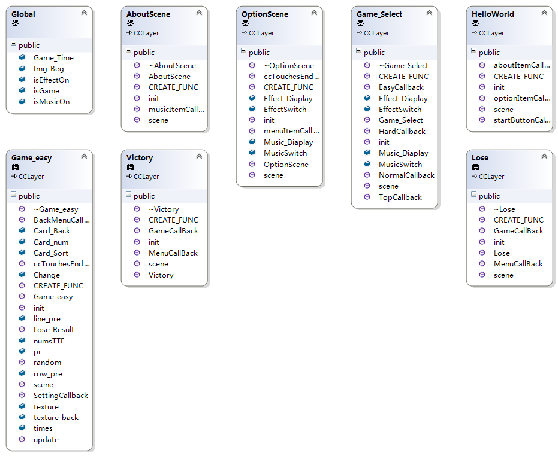
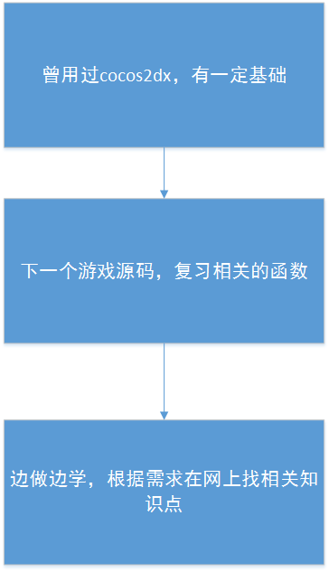
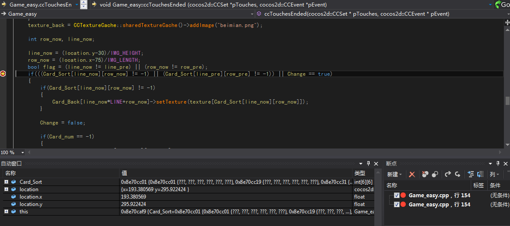
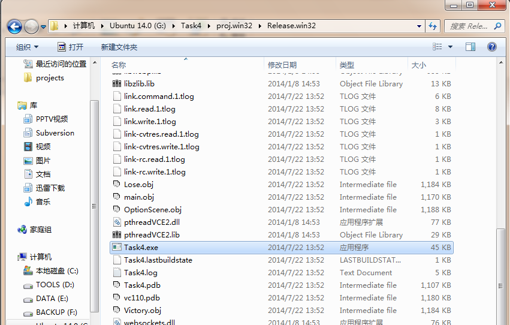

一.需求分析
- 为玩家提供休息的方式
- 寓教于乐,锻炼玩家的记忆能力
二.设计
- 解决方案
- 选择该类库的原因:曾用这个类库做过游戏开发
- 游戏策划:可供反转的卡牌共36张,其中有18张不同的卡牌,开始时都为反面,游戏难度由游戏时间决定,当连续翻转的两张牌相同时则两张牌呈现正面状态,当36张卡牌都为正面时游戏胜利,在时间内未全部翻转则失败。
- 游戏架构设计
- 如何处理用户输入:通过按钮和触摸事件对用户输入进行响应
- 如何刷屏:通过场景间的切换和触摸事件的响应进行刷屏
- 如何设计游戏循环:游戏通过时间计数和翻开的卡牌数决定输赢。在游戏场景结束后会进入Victory和Lose场景,里面有回到菜单和重新本局游戏的按钮,以此达成游戏循环。
- 核心类的设计与分析

- 学习路径图

三.调试过程

四.测试过程
测试截图

解决方法:将Recourses里的资源文件复制到exe文件的文件夹里